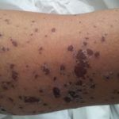
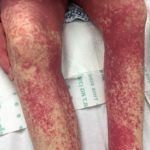
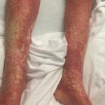
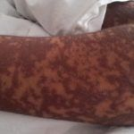
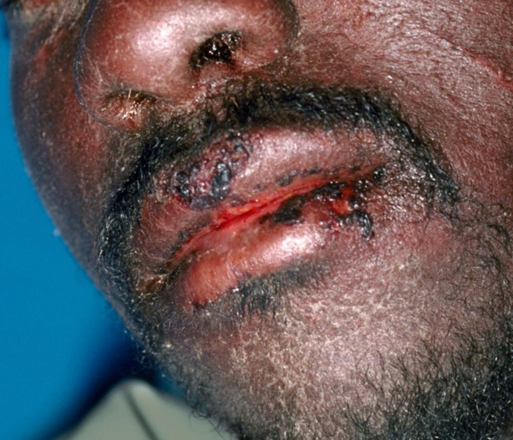
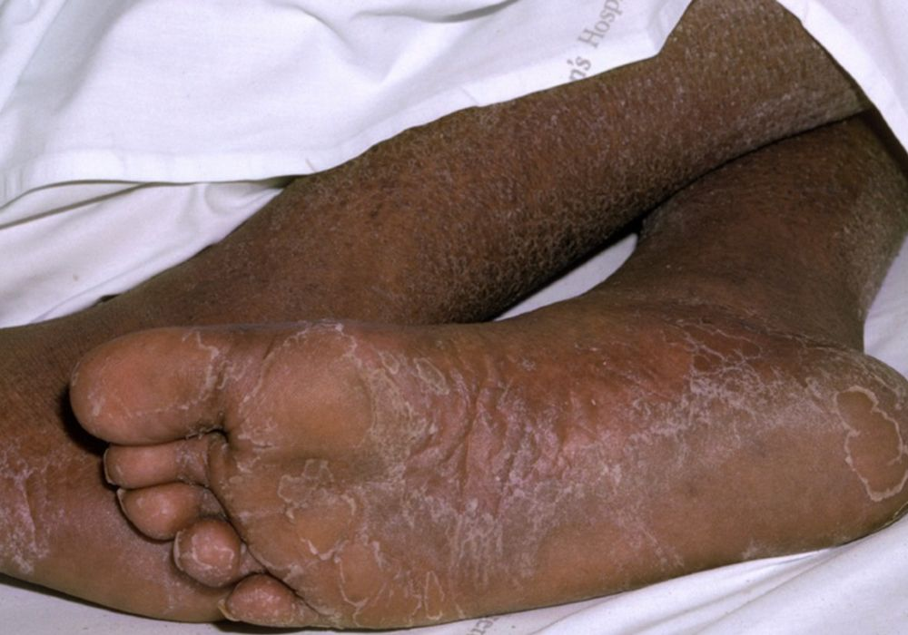
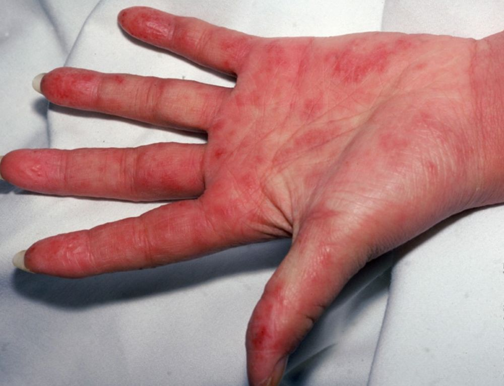
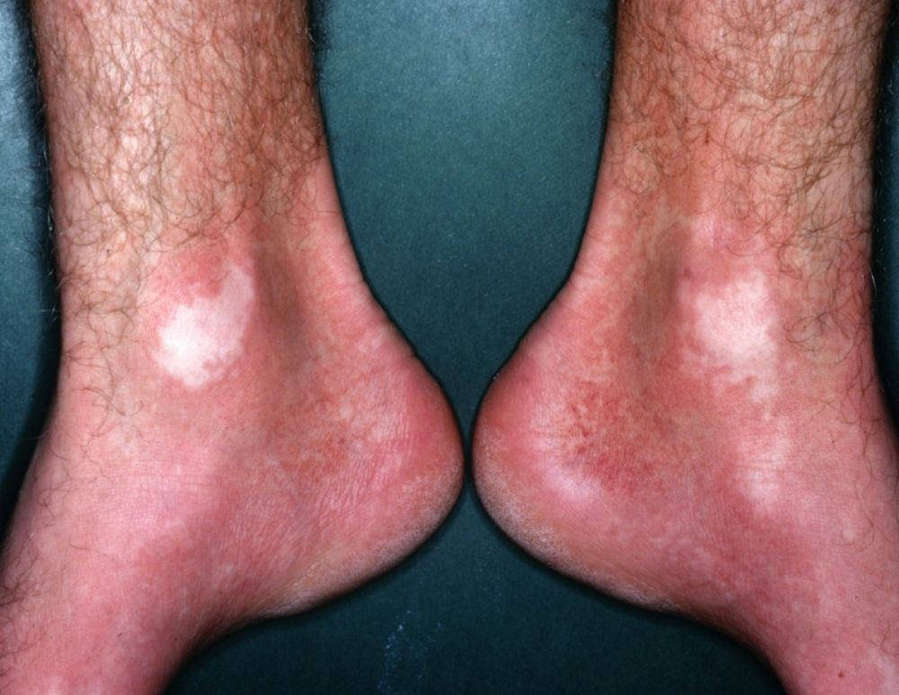
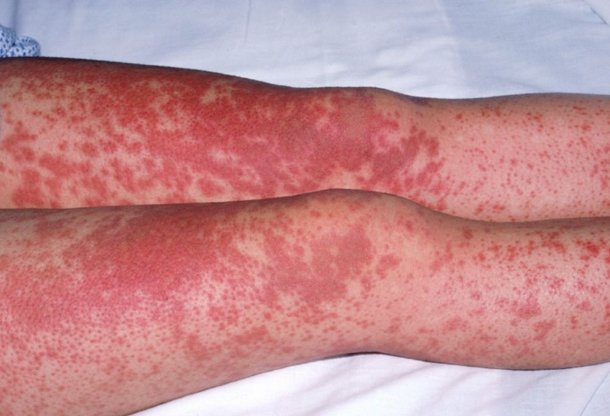
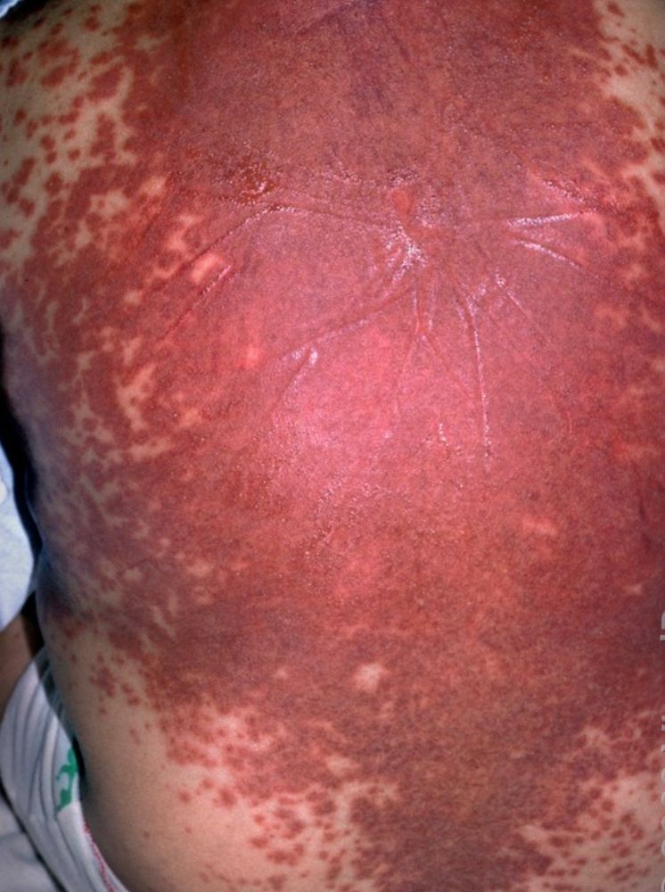

A Síndrome DRESS (Drug rash with eosinophilia and systemic symptoms) ou Drug-induced hypersensitivity syndrome (DIHS) é uma reação idiossincrática a medicamentos, caracterizada por erupções cutâneas, eosinofilia (aumento de eosinófilos no sangue) e sintomas sistêmicos, como febre, linfadenopatia (inchaço dos gânglios linfáticos), edema da face e envolvimento de órgãos internos, como fígado, rins, pulmões e coração. Surge de 15 a 40 dias após a ingestão da droga, desenvolvendo-se por mecanismo tipo IV, tendo mortalidade de 5-10%.
Etiopatogenia
A Síndrome DRESS é desencadeada por uma reação de hipersensibilidade a medicamentos, com destaque para:
• Anticonvulsivantes: Carbamazepina, fenitoína, fenobarbital e lamotrigina.
• Antibióticos: Sulfonamidas, vancomicina e minociclina.
• Outros medicamentos: Alopurinol, dapsona e alguns antirretrovirais.
• Fatores genéticos: Polimorfismos em genes como HLA-B*58:01 (associado ao alopurinol) aumentam o risco.
• Reativação viral: Vírus da família Herpesviridae, como HHV-6, EBV e citomegalovírus estão frequentemente associados à síndrome.
• Fortes associações entre alelos HLA classe I e predisposição DIHS/DRESS incluem HLA-B∗13:01 e dapsona, HLA-B∗58:01 e alopurinol, e HLA-B∗32:01 e vancomicina.
Manifestações clínicas
Os sintomas geralmente aparecem 2 a 6 semanas após o início do uso do medicamento e incluem:
• Cutâneos: Erupções generalizadas, edema facial, descamação e lesões mucosas.
• Sistêmicos: Febre, linfadenopatia e envolvimento de órgãos como:
o Fígado: Hepatite (80% dos casos).
o Rins: Nefrite (40%).
o Pulmões: Pneumonite (33%).
o Coração: Miocardite (15%).
• Hematológicos: Eosinofilia, linfocitose atípica e trombocitopenia.
Diagnóstico
É baseado em critérios clínicos e laboratoriais, como:
• Critérios RegiSCAR: Incluem hospitalização, erupção cutânea, febre >38°C, linfadenopatia, envolvimento de órgãos e anormalidades hematológicas.
Obs.: A pontuação RegiSCAR é um conjunto de critérios desenvolvidos pelo Registro de Reações Adversas Cutâneas Graves (RegiSCAR) para padronizar o diagnóstico da síndrome DRESS. Ajuda os médicos a diferenciar o DRESS de outras reações medicamentosas e condições sistêmicas, avaliando características clínicas e laboratoriais específicas
• Exames laboratoriais: Hemograma (eosinofilia, linfocitose atípica), testes de função hepática e renal, e sorologia para vírus como HHV-6.
• Biópsia de pele: Pode mostrar infiltrado linfocitário e eosinofilia.
Tratamento
Envolve:
1. Suspensão imediata do medicamento causador.
2. Corticosteroides sistêmicos: Prednisona é o tratamento principal, com dose alta inicial e redução gradual ao longo de 6-12 semanas para evitar recaídas.
3. Cuidados de suporte: Hidratação, controle de infecções e monitoramento de órgãos afetados.
4. Terapias alternativas: Imunoglobulinas intravenosas (IVIG) ou imunossupressores como ciclosporina, micofenolato mofetil, em casos graves.
Complicações e prognóstico
• Complicações: Falência hepática ou renal, miocardite e desenvolvimento de doenças autoimunes (ex.: tireoidite).
• Mortalidade: Aproximadamente 10%, principalmente devido ao envolvimento grave de órgãos.
• Recuperação: A maioria dos pacientes se recupera em 6-9 semanas, mas alguns podem ter um curso prolongado ou sequelas permanentes.
A Síndrome DRESS é uma emergência médica que requer diagnóstico precoce e tratamento imediato para reduzir complicações e mortalidade.
REFERÊNCIAS BIBLIOGRÁFICAS
1. Drug-Induced Hypersensitivity Syndrome (DIHS)/Drug Reaction With Eosinophilia and Systemic Symptoms (DRESS): Clinical Features and Pathogenesis. Hama N, Abe R, Gibson A, Phillips EJ.J Allergy Clin Immunol Pract. 2022 May;10(5):1155-1167.e5.
2. DRESS syndrome: an interaction between drugs, latent viruses, and the immune system. Criado PR, Ianhez M, Miot HA, Criado RFJ, Talhari C, Müller Ramos P.An Bras Dermatol. 2025 Jan-Feb;100(1):104-120.
3. DRESS Mimicking Flushing Syndrome Associated with Vancomycin: A Case Report. Khanth P E S, Thangaraju P, Gaikwad NR, Wasnik PN.Curr Drug Saf. 2025 Jan 7.
4. Successful Treatment of Mexiletine-Induced Methylprednisolone-Resistant DRESS Syndrome With TNF-alpha Inhibitor. Zhang C, Cao X, Su T, Xia J, Zhang M, Yin Z, Lu Y.Am J Ther. 2025 Jan-Feb 01;32(1):e109-e111
5. DRESS syndrome: More than just a rash. Beck J.JAAPA. 2024 Mar 1;37(3):1-4.
Atlas de imagens 11





















Na Skin Prime
Como podemos ajudar
Entre os recursos citados para Dress, estes estão disponíveis na clínica:
Diagnóstico